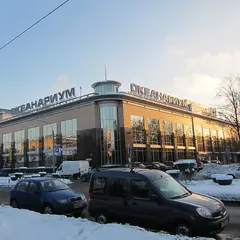

Подборку собрали 9 ноября, прошедшие события скрыты. Свежая афиша — на главной
Подборка для девичника · данные на 9 ноября
Девичник в Петербурге: куда пойти с подругами
60 планов для девичника и вечера с подругами: бранчи и кофейни, спа и бани, мастер-классы, караоке и бары. Ниже — самые популярные места из этих планов (всего их 106) и 25 событий на ближайшие две недели. Отметь пару вариантов и отправь ссылку подругам: каждая выберет, что ей нравится и когда удобно, — без двухсот сообщений в чате.
- 60 планов
- 106 мест
- 25 событий
Планы для девичника 24 из 60
- Дом с башнями · Доходный дом-«замок» · м. Петроградская
- 4 минуты пешкомSecret Garden · Оранжерея
- 4 минуты пешкомNerede · Кофейня
Дом с башнями на площади Льва Толстого, рядом зимний сад с фонтаном, затем кофе в Nerede — всё в паре минут ходьбы.
Открыть план: Замок, пальмы и кофеПозвать сюда: Замок, пальмы и кофе
Фото: Grigorius m, CC BY-SA 4.0 · Wikimedia Commons
- Взаперти на Казанской · Квест · м. Невский проспект
- 7 минут пешкомПышечка · Пышечная
Выбраться из квеста на Казанской и через пять минут отметить победу пышками на Гороховой.
Открыть план: Квест и пышкиПозвать сюда: Квест и пышки
Фото: Vladimir Ivanov, общественное достояние · Wikimedia Commons
- Главный штаб Эрмитажа · Музей · м. Адмиралтейская
- 2 минуты пешкомПышки на Большой Морской · Пышечная
Выставки в Главном штабе Эрмитажа и пышки с кофе в двух минутах на Большой Морской.
Открыть план: Эрмитаж и пышкиПозвать сюда: Эрмитаж и пышки
Фото: Max A. Khlopov, CC BY-SA 3.0 · Wikimedia Commons
- Александринский театр · Театр · м. Гостиный двор
- 5 минут пешкомOy! · Коктейльный бар
Классика в новой режиссуре и ложи в золоте старейшего драмтеатра, а потом 5 минут пешком — мартини-бар с устрицами.
Открыть план: Александринка и мартини с устрицамиПозвать сюда: Александринка и мартини с устрицами
Фото: Bene Riobó, CC BY-SA 4.0 · Wikimedia Commons
- Артмуза · Креативное пространство · м. Василеостровская
- 6 минут пешкомТрубочерия · Кондитерская
Огромное пространство современного искусства на Васильевском, а потом 6 минут пешком — кондитерская, где начинки вафельных трубочек меняются по сезону.
Открыть план: Артмуза и вафельные трубочкиПозвать сюда: Артмуза и вафельные трубочки
Фото: SoulMaker, CC BY-SA 4.0 · Wikimedia Commons
- Во весь голос · Книжный магазин · м. Чернышевская
- 1 минута пешкомХроники · Рюмочная
Места для чтения и встречи с авторами в «Во весь голос», а через дорогу — бар-рюмочная с творческой публикой.
Открыть план: Большой книжный и рюмочнаяПозвать сюда: Большой книжный и рюмочная
Фото здания: GAlexandrova, CC BY-SA 4.0 · Wikimedia Commons
- Ботанический сад Петра Великого · Сад · м. Петроградская
- 7 минут пешкомBig Wine Freaks · Винный бар
Японский сад и оранжереи с тропиками, а потом 7 минут пешком — шампань-бар, с которого началась гастроулица на Инструментальной.
Открыть план: Ботанический сад и шампань-барПозвать сюда: Ботанический сад и шампань-бар
Фото: Afanasovich, CC BY 4.0 · Wikimedia Commons
- Ruc's Heaven · Винный бар · м. Площадь Восстания
- 3 минуты пешкомПляски · Танцевальный бар
Кава, альбариньо и винные коктейли в баре на Песках, а через пару минут — танцевальный бар с диско-караоке по субботам.
Открыть план: Вино на Песках и танцыПозвать сюда: Вино на Песках и танцы
Фото здания: Bestalex, CC BY-SA 4.0 · Wikimedia Commons
- Дворцовая площадь · Площадь · м. Адмиралтейская
- 9 минут пешкомЧАО Какао · Какаочная
Арка Главного штаба и Александровская колонна в вечерней подсветке, а потом 9 минут пешком — густой горячий шоколад из окошка какаочной.
Открыть план: Дворцовая и горячий шоколадПозвать сюда: Дворцовая и горячий шоколад
Фото: Godot13, CC BY-SA 4.0 · Wikimedia Commons
- Дом книги · Книжный магазин · м. Невский проспект
- 5 минут пешкомTerrassa · Ресторан
Книжный в доме Зингера с видом на Казанский собор, а потом 5 минут пешком — ресторан на крыше с куполами и Домом Зингера под ногами.
Открыть план: Дом книги и ужин на крышеПозвать сюда: Дом книги и ужин на крыше
Фото: Florstein, CC BY-SA 4.0 · Wikimedia Commons
- Eggsellent · Кафе-кофейня · м. Садовая
- 5 минут пешкомНовая Голландия · Культурное пространство
Яйца во всех видах и хороший кофе на Мойке, а потом 5 минут пешком — остров с выставками, маркетами и лекциями.
Открыть план: Завтрак весь день и Новая ГолландияПозвать сюда: Завтрак весь день и Новая Голландия
Фото: Florstein, CC BY-SA 4.0 · Wikimedia Commons
- Кафе на Хлебозаводе · Кафе-пекарня · м. Чкаловская
- 8 минут пешкомFrantsuza Bistrot · Французское бистро
Свежий хлеб и завтраки до обеда у бывшего Левашовского хлебозавода, а к обеду — 8 минут пешком до бистро с луковым супом и ягодными тартами.
Открыть план: Завтрак на Хлебозаводе и французское бистроПозвать сюда: Завтрак на Хлебозаводе и французское бистро
Фото: Никонико962, CC BY-SA 4.0 · Wikimedia Commons
- Mntn coffee · Кофейня · м. Горный институт
- 2 минуты пешкомСевкабель Порт · Креативное пространство
- 4 минуты пешкомOnTap · Крафтовый бар
Латте с собой, закат у залива в бывшем кабельном заводе, а когда стемнеет — бар с длинным списком кранов прямо в порту.
Открыть план: Закат на Севкабеле и крафтПозвать сюда: Закат на Севкабеле и крафт
Фото: Priana686, CC BY-SA 4.0 · Wikimedia Commons
- Ленинградский зоопарк · Зоопарк · м. Горьковская
- 7 минут пешкомAtom Heart Coffee · Кофейня
Тигры, приматы и птицы в одном из старейших зоопарков страны, а потом 7 минут пешком — яркая кофейня в эстетике 60–70-х.
Открыть план: Зоопарк и кофейня в духе 70-хПозвать сюда: Зоопарк и кофейня в духе 70-х
Фото: Александровы АГ, CC BY-SA 4.0 · Wikimedia Commons
- Все свободны · Книжный магазин · м. Чернышевская
- 3 минуты пешкомПенка · Кофейня
Засидеться с какао на мансарде независимого книжного, а потом пара минут пешком — кофейня у Чернышевской с вишнёвым пирогом.
Открыть план: Книжная мансарда и вишнёвый пирогПозвать сюда: Книжная мансарда и вишнёвый пирог
Фото: ELindas, CC BY-SA 4.0 · Wikimedia Commons
- Буше · Пекарня-кофейня · м. Адмиралтейская
- 6 минут пешкомГлавный штаб Эрмитажа · Музей
Круассаны и эклеры в петербургской пекарне, а потом 6 минут пешком — импрессионисты и Матисс под стеклянными крышами Главного штаба.
Открыть план: Круассаны и Главный штабПозвать сюда: Круассаны и Главный штаб
Фото: Max A. Khlopov, CC BY-SA 3.0 · Wikimedia Commons
- Корпус Бенуа Русского музея · Музей · м. Невский проспект
- 1 минута пешкомКафе Бенуа · Кафе
Русский XX век в корпусе Бенуа — Малевич, Петров-Водкин, Кандинский, — а потом красивые десерты в кафе прямо в колонном зале музея.
Открыть план: Малевич и десерты в колонном залеПозвать сюда: Малевич и десерты в колонном зале
Фото: Никонико962, CC BY-SA 4.0 · Wikimedia Commons
- Мариинский-2 · Театр оперы и балета · м. Садовая
- 10 минут пешкомKuznya House · Ресторан
Опера или балет на новой сцене с отличной акустикой, а потом 10 минут пешком до Новой Голландии — ужин в старой кузнице, позже там играют диджеи.
Открыть план: Мариинский-2 и ужин в кузницеПозвать сюда: Мариинский-2 и ужин в кузнице
Фото: randreu, CC BY 3.0 · Wikimedia Commons
- Парк 300-летия Санкт-Петербурга · Парк · м. Беговая
- 24 минуты пешкомЛахта Центр: обзорная площадка и набережная · Смотровая площадка
Прогулка по длинному молу на закате, а потом подъём на 83-й этаж самого высокого небоскрёба Европы — огни города и залива.
Открыть план: Мол парка 300-летия и ЛахтаПозвать сюда: Мол парка 300-летия и Лахта
Фото: Germash19, CC BY-SA 4.0 · Wikimedia Commons
- В тишине · Иммерсивный музей · м. Чернышевская
- 10 минут пешкомDuo Gastrobar · Гастробар
Час без слов в интерактивном музее, где гиды общаются жестами, а потом 10 минут пешком — наговориться в гастробаре Duo.
Открыть план: Музей тишины и гастробарПозвать сюда: Музей тишины и гастробар
Фото здания: Vityavo, CC BY-SA 4.0 · Wikimedia Commons
- Театр музыкальной комедии · Театр · м. Гостиный двор
- 8 минут пешкомМама Тата · Кафе
Мюзикл или оперетта в нарядном зале Театра музыкальной комедии, а потом 8 минут пешком — хачапури и сытные салаты в «Маме Тате».
Открыть план: Мюзикл на Итальянской и домашняя кухняПозвать сюда: Мюзикл на Итальянской и домашняя кухня
Фото: Книжная пыль, CC BY-SA 4.0 · Wikimedia Commons

- Океанариум «Планета Нептун» · Океанариум · м. Звенигородская
- 6 минут пешкомWe Want More · Кофейня
Акулы, скаты и подводный тоннель — идея на дождливый день, а потом 6 минут пешком — кофейня с мокко и авторскими напитками.
Открыть план: Океанариум и моккоПозвать сюда: Океанариум и мокко
Фото: Obakeneko, CC BY 3.0 · Wikimedia Commons
- KGallery · Галерея · м. Гостиный двор
- 2 минуты пешкомSalone Pasta&Bar · Итальянский ресторан
Живопись XX века и ленинградское искусство в старинном особняке, а потом пара минут пешком — свежая паста на Фонтанке.
Открыть план: Особняк KGallery и пастаПозвать сюда: Особняк KGallery и паста
Фото здания: GAlexandrova, CC BY-SA 4.0 · Wikimedia Commons
- Арт-центр «Пушкинская-10» · Арт-центр · м. Площадь Восстания
- 5 минут пешкомCafé Claret · Ресторан
Мастерские, галереи и музей нонконформизма в бывшем сквоте, а потом 5 минут пешком — неспешный ужин в тихом дворе отеля «Гельвеция».
Открыть план: Пушкинская-10 и ужин во двореПозвать сюда: Пушкинская-10 и ужин во дворе
Фото здания: GAlexandrova, CC BY-SA 4.0 · Wikimedia Commons


Места из этих планов 18 из 106
наб. реки Фонтанки, 30
Новое
Свежая паста и бар на Фонтанке — лёгкий итальянский ужин вдвоём без лишней торжественности.
Подробнее и маршрут: Salone Pasta&BarПозвать сюда: Salone Pasta&Bar
Фото здания: GAlexandrova, CC BY-SA 4.0 · Wikimedia Commons
Дворцовая площадь, 6-8
Новое
Импрессионисты, Матисс и Пикассо в светлых анфиладах под стеклянными крышами, плюс большие сменные выставки.
Подробнее и маршрут: Главный штаб ЭрмитажаПозвать сюда: Главный штаб Эрмитажа
Фото: Max A. Khlopov, CC BY-SA 3.0 · Wikimedia Commons
наб. реки Мойки, 22
Новое
Ресторан на верхнем этаже отеля у Дворцовой: панорама крыш и соборов, сезонная кухня.
Подробнее и маршрут: BellevueПозвать сюда: Bellevue
Фото: Moneycantbuy, CC BY-SA 4.0 · Wikimedia Commons
13-я линия В.О., 70
Новое
Огромное пространство современного искусства на Васильевском: выставки, мастерские, концерты.
Подробнее и маршрут: АртмузаПозвать сюда: Артмуза
Фото: SoulMaker, CC BY-SA 4.0 · Wikimedia Commons
ул. Профессора Попова, 2П
Новое
Старейший ботанический сад страны: дендрарий, японский сад и оранжереи с тропиками; осенью сюда приходят любоваться клёнами.
Подробнее и маршрут: Ботанический сад Петра ВеликогоПозвать сюда: Ботанический сад Петра Великого
Фото: Afanasovich, CC BY 4.0 · Wikimedia Commons
Шпалерная ул., 26
Новое
Интерактивный музей, где гиды общаются жестами, а гости — без слов; есть формат «свидания в тишине» с мастер-классом.
Подробнее и маршрут: В тишинеПозвать сюда: В тишине
Фото здания: Vityavo, CC BY-SA 4.0 · Wikimedia Commons
Казанская ул., 7
Новое
Квест-центр у Казанского собора: хорроры с живыми актёрами и лаунж, где можно отметить победу после игры.
Подробнее и маршрут: Взаперти на КазанскойПозвать сюда: Взаперти на Казанской
Фото: Vladimir Ivanov, общественное достояние · Wikimedia Commons
ул. Некрасова, 23
Новое
Уютный независимый книжный на Некрасова с кафе и мансардой, где легко засидеться с какао и книгой; есть и полка комиксов.
Подробнее и маршрут: Все свободныПозвать сюда: Все свободны
Фото: ELindas, CC BY-SA 4.0 · Wikimedia Commons
Дворцовая пл.
Новое
Главная площадь города: Зимний дворец, арка Главного штаба и Александровская колонна; вечерняя подсветка — отдельное удовольствие.
Подробнее и маршрут: Дворцовая площадьПозвать сюда: Дворцовая площадь
Фото: Godot13, CC BY-SA 4.0 · Wikimedia Commons
Каменноостровский пр., 35 (площадь Льва Толстого)
Новое
Две шестигранные башни Белогруда в духе английского замка держат всю площадь; на одной — циферблат со знаками зодиака. Силуэт эффектен в сумерках.
Подробнее и маршрут: Дом с башнямиПозвать сюда: Дом с башнями
Фото: Grigorius m, CC BY-SA 4.0 · Wikimedia Commons
Елагин остров, 4Т
Новое
Остров-парк без машин: пруды, белки, дворец и Стрелка, где провожают солнце над заливом. Осенью — одно из лучших мест города.
Подробнее и маршрут: Елагин островПозвать сюда: Елагин остров
Фото: Александровы АГ, CC BY-SA 4.0 · Wikimedia Commons
Высотная ул., 1
Новое
Панорама города и залива с 83-го этажа самого высокого небоскрёба Европы, а внизу — набережная для прогулки. Билеты разбирают быстро.
Подробнее и маршрут: Лахта Центр: обзорная площадка и набережнаяПозвать сюда: Лахта Центр: обзорная площадка и набережная
Фото: TomPlay148, CC BY-SA 3.0 · Wikimedia Commons
Караванная ул., 8
Новое
Демократичное кафе с домашней кухней: хинкали, хачапури-фокачча, сытные салаты — под большую компанию.
Подробнее и маршрут: Мама ТатаПозвать сюда: Мама Тата
Фото здания: Анастасия Юрьевна Львова, CC BY-SA 4.0 · Wikimedia Commons
Петергоф, Разводная ул., 2
Новое
Каскады, Самсон и аллеи до самого залива — на Петергоф стоит закладывать целый день. Сезон фонтанов уточняйте перед поездкой.
Подробнее и маршрут: Нижний парк ПетергофаПозвать сюда: Нижний парк Петергофа
Фото: Клеткин, CC BY-SA 3.0 · Wikimedia Commons
наб. Адмиралтейского канала, 2
Новое
Остров с выставками, лекциями, кино и маркетами в старых складах; в любое время года есть программа.
Подробнее и маршрут: Новая ГолландияПозвать сюда: Новая Голландия
Фото: Florstein, CC BY-SA 4.0 · Wikimedia Commons
Павловск, Садовая ул., 20
Новое
Огромный пейзажный парк с долинами, мостиками и колоннадой Аполлона; белки здесь почти ручные — возьмите орешки.
Подробнее и маршрут: Павловский паркПозвать сюда: Павловский парк
Фото: Florstein, CC BY-SA 4.0 · Wikimedia Commons
Приморский пр., 74
Новое
Молодой парк на берегу залива: длинный мол, вид на Лахта Центр и закаты прямо над водой — особенно хорош вечером.
Подробнее и маршрут: Парк 300-летия Санкт-ПетербургаПозвать сюда: Парк 300-летия Санкт-Петербурга
Фото: Germash19, CC BY-SA 4.0 · Wikimedia Commons
ул. Восстания, 31
Новое
Уютная кофейня у Чернышевской с вишнёвым пирогом и вечерними кинопоказами — спокойный вариант для неспешного свидания.
Подробнее и маршрут: ПенкаПозвать сюда: Пенка
Фото здания: Bestalex, CC BY-SA 4.0 · Wikimedia Commons


Куда сходить с подругами в ближайшие две недели 8 из 25
Commode · м. Маяковская · 390–1 990 ₽ · 18+
У микрофона только девушки-комики из Петербурга и Москвы: про бывших, свидания и всё наболевшее. Идёт почти каждый вечер на Невском — готовый план для девичника.
Подробнее: Стендап по-женскиПозвать сюда: Стендап по-женскиБилеты : Стендап по-женски (страница с билетами, откроется в новой вкладке)
Иммерсивный театр «Морфеус» · м. Адмиралтейская · 3 000–3 500 ₽ · 18+
Иммерсивная комедия-расследование: после бурного девичника вы просыпаетесь в разгромленном номере, а невеста исчезла. Группа 2–8 человек, сеансы с 13:00 до 21:30.
Подробнее: До свадьбы доживётПозвать сюда: До свадьбы доживётБилеты : До свадьбы доживёт (страница с билетами, откроется в новой вкладке)
Эрмитаж, Главный музейный комплекс · м. Адмиралтейская
Шёлковые придворные халаты, портреты цинских полководцев и воссозданный кабинет китайского учёного в Гербовом зале. Выставка работает до 22 ноября — успейте.
Подробнее: Императорский Китай. Династия Цин (1644–1911)Позвать сюда: Императорский Китай. Династия Цин (1644–1911)Билеты : Императорский Китай. Династия Цин (1644–1911) (страница с билетами, откроется в новой вкладке)
Фото: Teddy fox78, CC BY-SA 3.0 · Wikimedia Commons
Театр им. Комиссаржевской · м. Гостиный двор · 300–4 000 ₽ · 18+
Булгаковская авантюра времён НЭПа: под вывеской ателье Зоя Пельц копит деньги, чтобы увезти любимого графа в Ниццу. Чёрный юмор, мистика и криминал.
Подробнее: Зойкина квартираПозвать сюда: Зойкина квартираБилеты : Зойкина квартира (страница с билетами, откроется в новой вкладке)
Мариинский-2 · м. Садовая · от 2 000 ₽ · 6+
Цикл лекций Ольги Розановой о зарубежных мастерах, работавших на Мариинской сцене. Встречи раз в месяц во втором здании — повод прийти в театр не только на спектакль.
Подробнее: Ольга Розанова. Зарубежные мастера на Мариинской сценеПозвать сюда: Ольга Розанова. Зарубежные мастера на Мариинской сценеБилеты : Ольга Розанова. Зарубежные мастера на Мариинской сцене (страница с билетами, откроется в новой вкладке)
Фото: randreu, CC BY 3.0 · Wikimedia Commons
Музей «Эрарта» · м. Горный институт · 1 500–2 950 ₽
Итальянский фэшн-фотограф, четверть века работавший с Vogue Italia: портреты звёзд, моделей и дизайнеров эпохи большой моды. Легко и красиво смотреть с подругами.
Подробнее: Бардо Фабиани. Память о прекрасном прошломПозвать сюда: Бардо Фабиани. Память о прекрасном прошломБилеты : Бардо Фабиани. Память о прекрасном прошлом (страница с билетами, откроется в новой вкладке)
Фото: Erarta, CC BY 3.0 · Wikimedia Commons
Иммерсивный театр «Морфеус» · м. Адмиралтейская · от 4 500 ₽ · 18+
Иммерсивный тру-крайм: вы присяжные, изучаете улики по делу о пропавшем подростке и решаете судьбу подозреваемого. Группа 6–14 человек, начало в 18:00–19:45.
Подробнее: Судный деньПозвать сюда: Судный деньБилеты : Судный день (страница с билетами, откроется в новой вкладке)
Театр музыкальной комедии · м. Гостиный двор · 400–2 850 ₽ · 12+
Оперетта Легара о фиктивном браке, который вдруг становится настоящим: парижский карнавал, богема и вальсы. Главные роли отмечены «Золотыми софитами».
Подробнее: Граф ЛюксембургПозвать сюда: Граф ЛюксембургБилеты : Граф Люксембург (страница с билетами, откроется в новой вкладке)
Фото: Книжная пыль, CC BY-SA 4.0 · Wikimedia Commons


Как позвать
- Выбери план, место или событие — в карточке адрес, цены и маршрут в Яндекс Картах.
- Нажми «Позвать сюда» — соберётся приглашение-игра для свидания или голосование для компании.
- Отправь ссылку в любой мессенджер: тебе ответят, а компания отметит, куда и когда может. Бесплатно и без регистрации.